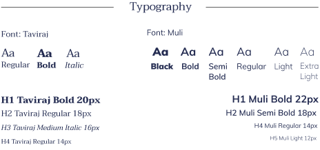
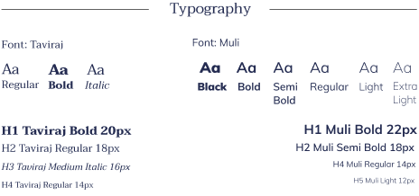

Vivre Livre
View Mobile PrototypeRoles
- User Research
- UX/UI Design
- Branding
- Visual Design
- User Testing
Problem
VL industries, a fictional company, wants to help create a mobile app to help:
- Book lovers keep track of books they own and what they plan to read next
- Stay connected with other book lovers
- Provide sustainability to help ease growing concern regarding the environment
- Potentially provide post-consumer packaging or collaborating with an eco-friendly shipping company
Solution
My solution to this brief is Vivre Livre, a mobile platform focused on:
- User Friendliness, organization, and sustainability
- Aims to allow users to stay connected by keeping track of what they are reading and their reading goals
- Allows users to sell their pre-loved books to others
Research
My research goal was to understand the user's reading habits, such as how they discover and track books they like. Additionally, I wanted to figure out which features users deemed the most important when creating this mobile application. Once I sent this out to friends and family and received feedback, I noticed a few things:
- First, four participants responded that they actually held onto the books that they finished reading - an option that was not on the survey itself.
- Second, when it came to features that could be incorporated into the app, many users were against the idea of adding forums to discuss books with friends. Quite a few were against virtual book clubs as well.
With this information in mind, I started thinking of a way to create a platform that could provide not only user friendliness or simplicity, but also a place to stay connected with other book lovers and sell preloved books to other users.
Competitive Analysis
I performed a competitive analysis of a diverse range of book applications, which each offer something different to the mobile book app market. I analyzed Goodreads because it is the market leader in this industry and the most recognizable in my survey. I also analyzed LibraryThing and Anobii because they were tied for second best well known in my survey and in the market.


With these competitors in mind, a new potential platform could offer a cleaner and more modern interface compared to Goodreads. This competitor can additionally provide constant application updates that can eliminate crashes while in the middle of performing an action. Lastly, a new competitor could incorporate sustainability practices, such as a feature to plant trees whenever a user creates a new account, collaborating with an eco-friendly shipping company, or giving the user an option to provide their own packaging when selling their preloved books.
Full SWOTUser Personas
Next came the process of gathering more data to create user personas. I interviewed three people in person to talk in depth about their experiences when it came to other book applications. I also asked about their reading habits, such as whether they were avid book readers and how many books they read in the course of a month or two.
Full User PersonasUser Flow
Next I started sketching out possible user flows to accomplish the goals that came out of the user stories. I observed the ways Goodreads and LibraryThing designed their flows and created a visual user flow that seemed the most straightforward.

With my user stories, research, and personas in place, I started to sketch out my mobile application.

Once my wireframes were drawn out, I started testing these out right away with real people. During my first round of usability tests, I asked participants to complete three tasks. These three tasks included: (1) Sell a book, (2) Add a book to your library, and (3) Find book information. Once these tasks were completed, I received feedback highlighting a few improvements.

Since my tasks were fairly simple and straightforward, the feedback I had received was mainly in regards to my user interface. One user stated that using a modal on a mobile application was not ideal, as it is hard to interpret. A second user stated that the arrows on my shelves screen were confusing. They stated that I should make those intentions a little more clear since all the arrows are facing certain directions, which should indicate that the first folder should be open while the other two folders should be closed, etc.
See Full WireframesFor the Vivre Livre Brand, I developed a logo design, style guide, and some illustrations for the overall platform. All of these elements can be put together to represent Vivre Livre's growth as a brand and product.

When sketching out the logo, I initially played around with just the lettering to see if anything resembled what I wanted. However, that approach was not working, so I started to think of what exactly I wanted my app to be. One idea I sketched out included different variations of an open book and a tree sprouting out of it. This idea really resonated with me because I wanted to emphasize sustainability as a major part of this brand.
 

Vivre Livre isn't just about books - it's about bringing a community together. The name Vivre Livre was a good fit for this app because it seemed like a unique name that would stick with the user. Vivre, which is French, means many things - it means to live, to share, to experience. I want users to not only share their love for books, but to share the experiences they had while reading the book and using this app. Livre means book, which of course is also fitting because this app is aimed toward book lovers.
Lastly, I wanted this app to be clean, cool, calm, friendly, modern, and simple for users. I incorporated cool tones into my color scheme (blues and greens) for my icons and user interface. For my font scheme, I chose Taviraj and Muli because of the clean contrast, as I wanted a font scheme that was not overwhelming for users.
Once I incorporated the feedback from my first usability test into my first round of high fidelity mockups, I started to piece together my mobile app to look a bit more realistic.
With my high fidelity mockups, I moved the modal to the bottom of the screen so it was a bit more user friendly. Then, I changed the arrows so their intended use was clearer to the user. Next, when designing the other frames of my application, I referred to other websites for ideas. For example, I referred to Amazon's book details page and incorporated it into the "Where to Buy It" section of my app. Lastly, I referred to another second hand app called 'depop' and incorporated the 'Sell' page to my 'Sell Book' frame.
 View Prototype
View Prototype
After I finished putting together my first high fidelity mockup, I performed another round of usability tests performing the same tasks, but with different participants. I also received feedback on the user interface, as well as the design of my high fidelity app. One participant stated that my dashboard icons were too dark and the contrast seemed a little off. Another participant stated that the 'More' tab had a lot of subtabs and that it looked a little overwhelming to the eye. Lastly, the same participant also stated that my book images and icons were a little too small to tap on a mobile device and to possibly consider making them a little bigger.
In my final iterations, I made changes based on the feedback that the participants made during my second usability test. Some additional changes that were made in my final protoype include making the application more modern, and removing any visual noise (like outlines). I also improved the landing page and added a new image, as well as making my dashboard a little more interactive to the user.
View PrototypeConclusion
In conclusion, I learned quite a bit from this project. If I were to start again from the beginning, I would add a few more questions on my user survey about the sustainability aspect of my app. For example, I would ask what users thought about having the option of providing their own shipping boxes when selling a book, if collaborating with an eco-friendly shipping company would be a good fit, if providing post-consumer packaging would be beneficial, or if all three of these options together would be most desirable. I would also do more research on different eco-friendly shipping companies and shipping costs.
Thank you for taking the time to read my case study!